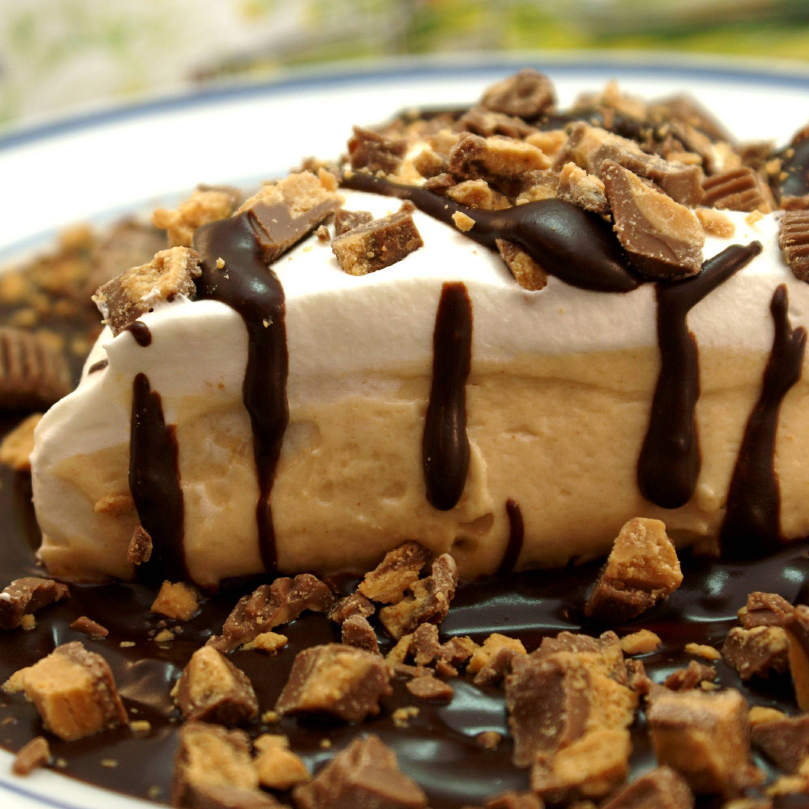

Peanut Butter Pie

Peanut Butter Pie
Cream Cheese. Peanut Butter. Reese's Peanut Butter Cups as garnish. Need I say more?
Ingredients
- 1 (8 ounce) package cream cheese, softened
- ½ cup creamy peanut butter
- ½ cup confectioners' sugar
- 1 (16 ounce) container frozen whipped topping, thawed, divided
- 1 (8 inch) Oreo Pie Crust
- 15 miniature chocolate-covered peanut butter cups (such as Reese's®), unwrapped
- Hershey's shell topping (optional garnish)
Steps
- Mix cream cheese, peanut butter, and confectioners' sugar together until smooth. Fold in 1/2 of the whipped topping, then spoon the mixture into graham cracker crust.
- Spread remaining whipped topping over the peanut butter mixture and garnish with peanut butter cups and optionally, Hershey's shell topping. Chill for at least 2 hours or overnight before serving.